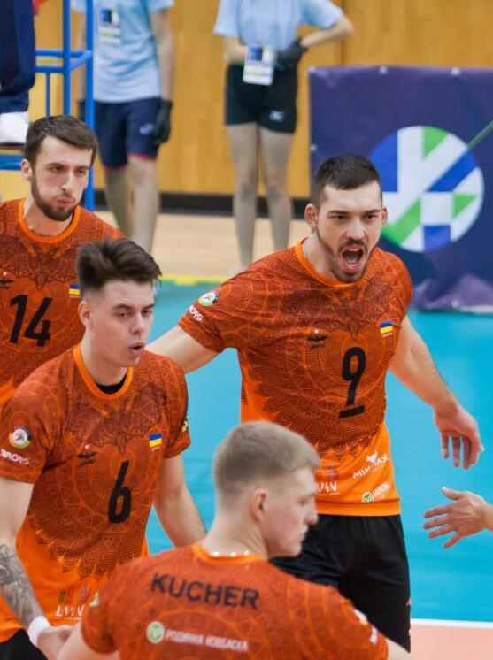

Історія клубу Барком Кажани

Волейбольний клуб «Барком-Кажани» — волейбольний клуб з м. Львова, Україна. Заснований 2009
року. Грав у Суперлізі України. Неодноразовий переможець першостей України, володар Кубка
та Суперкубка України. У сезоні 2022—2023 виступає в елітній польській Плюс Лізі.
Команда брала участь у першості вищої аматорської ліги України сезону 2009/2010 р.р. та в
турнірах різного рівня. У 2010 році «Барком» потрапила в Першу лігу чемпіонату України серед
чоловіків, а згодом стала чемпіоном України (сезон 2011—2012) та виборола путівку до Вищої ліги.
Знаковим для команди став травень 2013 року, який ознаменувався виходом «Баркому» у волейбольну
Суперлігу. Такий спортивний прорив став можливим завдяки перемозі львів'ян у двох перехідних
матчах. 13 травня із рахунком 3:1 ВК «Барком» розгромив харківську «Юридичну академію».
Не поступилися львів'яни своїм супротивникам і наступного дня. Гра з харківською командою завершилася
із загальним результатом 3:2 на користь «Баркому». Відтак, «баркомівці» стали першою волейбольною
командою на Львівщині, яка за останні 20 років потрапила до найвищого волейбольного дивізіону.
З цього часу «Барком» розпочинає нову сторінку у волейбольному спорті. У серпні 2013 року команда
змінює назву на «Барком-Кажани» та засновує у Львові Перші Міжнародні волейбольні змагання «Кубок Лева».
У 2016 році «Кажани» здобули перший трофей у своїй історії — Суперкубок України. У фіналі був розбитий
харківський «Локомотив» з рахунком 3:0.
Завершуємо сезон двома перемогами в Любіні
У боротьбі за 13-е місце «Кажанам» протистояв місцевий волейбольний клуб «Купрум».
У основній частині ПлюсЛіги «Барком-Кажани» поступилися у Любіні, тому у нас було
достатньо мотивації взяти реванш і успішно розпочати боротьбу за 13-те місце. Однак,
господарі розпочали цей сет активніше і в один момент вирвали перевагу в три очки (19:16).
За декілька миттєвостей рахунок став 24:21 на користь «Любіна». Наша команда продемонструвала
справжній характер і змогла зрівняти рахунок, а за мить вирвати перемогу у цій партії – 27:25.
У другій партії ми продовжували тиснути на суперника та шукати можливості набрати цінні
очки. На жаль, ведучи у рахунку 20:15, ми дозволили супернику провести декілька успішних
акцій і зрівняти рахунок (20:20). Однак у наступних розіграшах сильнішими виявилися
львів’яни – 25:22.
У третьому сеті наші гравці ще більше розігналися і не відпустили перевагу. Триразові
чемпіони України виграли 25:19 і забезпечили собі значну перевагу напередодні другого матчу.
Найкращим волейболістом (MVP) визнали Юліуса Фіркаля.
Купрум (Любін) – Барком-Кажани (Львів) 0:3 (25:27, 22:25, 19:25)
Купрум: Ференс, Лоренц, Кубіцькі, П’єтрашко, Краге, Ковальов, Шимура, Капіца, Четович, Черні
Барком: Квален, Щуров, Тупчій, Єніпазар, Фіркал, Смоляр, Канаєв, Мазенко, Головень, Кучер.